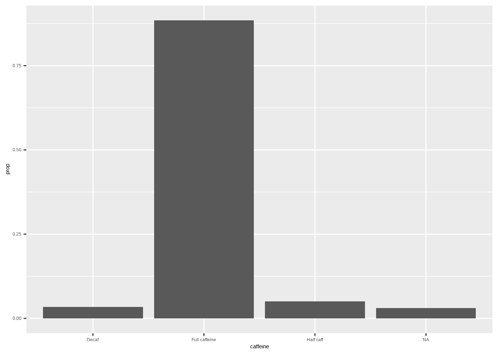
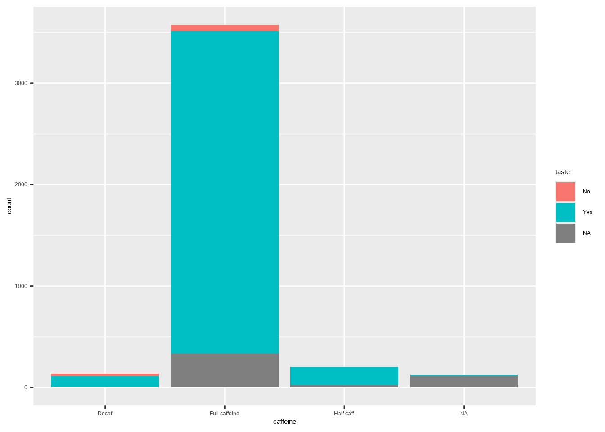

# This code will load the R packages we will use
install.packages(c("rcistats"),
repos = c("https://inqs909.r-universe.dev", "https://cloud.r-project.org"))
library(rcistats)
library(tidyverse)
# Uncomment and run for themes
# rcistats::install_themes()
# library(ThemePark)
# library(ggthemes)Categorical Data
Descriptive summaries & visualizations (freq, proportion, crosstabs, bar/pie/mosaic/waffle)
1 Introduction
- Recognize and work with categorical variables in R.
- Summarize categories using frequencies and proportions (a.k.a. relative frequency).
- Create standard plots for categorical data: bar, stacked bar, pie, mosaic, and waffle.K
- Read and interpret cross‑tabulations (two‑way tables) with row/column/table proportions.
Tip
Use the Copy button on each code chunk. Many chunks include a template version followed by a worked example.
2 Google Colab Setup
Copy the following code and put it in a code cell in Google Colab. Only do this if you are using a completely new notebook.
2.1 Data for this handout
We will use the Great American Coffee Taste Test survey data from TidyTuesday. Below is a subset of the data.
Code
coffee <- read_csv("https://raw.githubusercontent.com/rfordatascience/tidytuesday/master/data/2024/2024-05-14/coffee_survey.csv")2.2 Using the templates: what to change
Use this legend whenever you see a Template code block.
DATA→ replace with your data frame/tibble name (e.g.,coffee).VAR→ replace with the single categorical variable you want (e.g.,caffeine).- In
ggplot(DATA, aes(x = VAR)), writeggplot(coffee, aes(x = caffeine)). - In functions that take a vector (e.g.,
cat_stats(DATA$VAR)), writecat_stats(coffee$caffeine).
- In
VAR1andVAR2→ replace with the first and second categorical variables for two‑way tables/stacked bars (e.g.,caffeine,taste).DF/wdf/df_pie/waffle_df→ these are intermediate objects created in the chunk. You can keep the same names or rename them; if you rename, update the subsequent line that uses them.group = 1→ keep this as‑is for one‑variable proportion bar charts; it ensures correct normalization.
2.2.1 Quick replace checklist
- Swap
DATAfor your data frame (usuallycoffee). - Swap
VARfor your categorical column (e.g.,caffeine). - For two‑variable templates, set
VAR1andVAR2(e.g.,caffeineandtaste). - If you change any intermediate object name (like
df_pie), update it on the next line as well.
2.2.2 Tiny example
Template
# Frequency bar (template)
ggplot(DATA, aes(x = VAR)) +
geom_bar()Filled‑in
# Frequency bar (coffee example)
ggplot(coffee, aes(x = caffeine)) +
geom_bar()Template
# Crosstab row proportions (template)
cat_stats(VAR1, VAR2, prop = "row")Filled‑in
# Crosstab row proportions (coffee example)
cat_stats(coffee$caffeine, coffee$taste, prop = "row")3 Categorical Data
Categorical data record membership in a set of categories (levels), e.g., “Yes/No”, “Major”, or “City”.
- Stored as text (character/factor) or as codes like
1, 2, 3with a codebook describing the labels.
4 One‑variable summaries
4.1 Frequency (counts)
Definition: number of observations in each category.
Template:
# Replace DATA$VAR with your variable
# freq table (counts)
cat_stats(DATA$VAR)Example: caffeine preference (coffee$caffeine)
cat_stats(coffee$caffeine)#> Continguency Table
#>
#> n prop
#> Decaf 136 0.0347
#> Full caffeine 3576 0.9129
#> Half caff 205 0.0523
#>
#> Number of Missing: 125
#> Proportion of Missing: 0.0309252845126175
#> Row Variable: coffee$caffeine4.2 Proportion (relative frequency)
Definition: share of the sample in each category; comparable across sample sizes.
Template:
# proportions only
cat_stats(DATA$VAR)Example:
cat_stats(coffee$caffeine)#> Continguency Table
#>
#> n prop
#> Decaf 136 0.0347
#> Full caffeine 3576 0.9129
#> Half caff 205 0.0523
#>
#> Number of Missing: 125
#> Proportion of Missing: 0.0309252845126175
#> Row Variable: coffee$caffeine5 Two‑variable summaries (cross‑tabulation)
5.1 Cross‑tabulation (two‑way table)
- Rows: categories of one variable
- Columns: categories of the second variable
- Report counts or proportions by table, row, or column
ALL:
cat_stats(coffee$caffeine, coffee$taste)#> Continguency Table
#>
#> No Yes
#> Decaf "26 / 0.0073 / 0.208 / 0.2653" "99 / 0.0279 / 0.792 / 0.0287"
#> Full caffeine "66 / 0.0186 / 0.0203 / 0.6735" "3178 / 0.8957 / 0.9797 / 0.9212"
#> Half caff "6 / 0.0017 / 0.0335 / 0.0612" "173 / 0.0488 / 0.9665 / 0.0501"
#> Col Totals "98 / 0.0276" "3450 / 0.9724"
#> Row Totals
#> Decaf "125 / 0.0352"
#> Full caffeine "3244 / 0.9143"
#> Half caff "179 / 0.0505"
#> Col Totals "Total: 3548"
#>
#> Cell Contents: n / tbl % / row % / col %
#> Col Totals Contents: n / row %
#> Row Totals Contents: n / col %
#> Column Variable: coffee$taste
#> Row Variable: coffee$caffeineTable proportions (each cell ÷ grand total):
cat_stats(coffee$caffeine, coffee$taste, prop = "table")#> Continguency Table
#>
#> No Yes Row Totals
#> Decaf "26 / 0.0073" "99 / 0.0279" "125 / 0.0352"
#> Full caffeine "66 / 0.0186" "3178 / 0.8957" "3244 / 0.9143"
#> Half caff "6 / 0.0017" "173 / 0.0488" "179 / 0.0505"
#> Col Totals "98 / 0.0276" "3450 / 0.9724" "Total: 3548"
#>
#> Cell Contents: n / tbl %
#> Col Totals Contents: n / row %
#> Row Totals Contents: n / col %
#> Column Variable: coffee$taste
#> Row Variable: coffee$caffeineRow proportions (each cell ÷ its row total):
cat_stats(coffee$caffeine, coffee$taste, prop = "row")#> Continguency Table
#>
#> No Yes Row Totals
#> Decaf "26 / 0.208" "99 / 0.792" "125 / 0.0352"
#> Full caffeine "66 / 0.0203" "3178 / 0.9797" "3244 / 0.9143"
#> Half caff "6 / 0.0335" "173 / 0.9665" "179 / 0.0505"
#> Col Totals "98 / 0.0276" "3450 / 0.9724" "Total: 3548"
#>
#> Cell Contents: n / row %
#> Col Totals Contents: n / row %
#> Row Totals Contents: n / col %
#> Column Variable: coffee$taste
#> Row Variable: coffee$caffeineColumn proportions (each cell ÷ its column total):
cat_stats(coffee$caffeine, coffee$taste, prop = "col")#> Continguency Table
#>
#> No Yes Row Totals
#> Decaf "26 / 0.2653" "99 / 0.0287" "125 / 0.0352"
#> Full caffeine "66 / 0.6735" "3178 / 0.9212" "3244 / 0.9143"
#> Half caff "6 / 0.0612" "173 / 0.0501" "179 / 0.0505"
#> Col Totals "98 / 0.0276" "3450 / 0.9724" "Total: 3548"
#>
#> Cell Contents: n / col %
#> Col Totals Contents: n / row %
#> Row Totals Contents: n / col %
#> Column Variable: coffee$taste
#> Row Variable: coffee$caffeine6 Visualizing Categorical Data
6.1 Bar plots
6.1.1 Frequency bar plot
Template (frequency):
# ggplot() + geom_bar() counts rows per category by default
ggplot(DATA, aes(x = VAR)) +
geom_bar()Example:
ggplot(coffee, aes(x = caffeine)) +
geom_bar()6.1.2 Relative frequency bar plot
Template (proportion):
# after_stat(prop) computes proportions within the layer
ggplot(DATA, aes(x = VAR, y = after_stat(prop), group = 1)) +
geom_bar()Example:
ggplot(coffee, aes(x = caffeine, y = after_stat(prop), group = 1)) +
geom_bar()
Note
Tip: Add labels/theme as needed: labs(x = "", y = "Proportion") + theme_minimal()
6.2 Stacked bar plots
Template:
ggplot(DATA, aes(x = VAR1, fill = VAR2)) +
geom_bar()Example (stacked counts):
ggplot(coffee, aes(x = caffeine, fill = taste)) +
geom_bar()
Example (horizontal):
ggplot(coffee, aes(y = caffeine, fill = taste)) +
geom_bar()
Template (stacked proportions):
ggplot(DATA, aes(x = VAR1, fill = VAR2)) +
geom_bar(position = "fill") +
labs(y = "Proportion")6.3 Pie charts (use sparingly)
Note: Pie charts can be harder to compare precisely than bars. If you use them, label clearly.
Template:
df_pie <- cat_stats(DATA$VAR, tbl_df = TRUE)$table
ggplot(df_pie, aes(cat = Category, val = n, fill = Category)) +
geom_pie()Example:
coffee_pie <- cat_stats(coffee$caffeine, tbl_df = TRUE)$table
ggplot(coffee_pie, aes(cat = Category, val = n, fill = Category)) +
geom_pie()
7 Appendix: minimal templates (copy‑paste)
Each template below has placeholders in ALL CAPS (e.g., DATA, VAR, VAR1, VAR2). Replace them with your own dataset name and variable names.
7.1 Frequency table
cat_stats(DATA$VAR) DATA→ the name of your dataset (e.g.,coffee).VAR→ a single categorical variable (e.g.,caffeine).
7.2 Proportions only
cat_stats(DATA$VAR, prop_only = TRUE)DATA→ the name of your dataset (e.g.,coffee).VAR→ a single categorical variable (e.g.,caffeine).
7.3 Bar Plot: Frequency
ggplot(DATA, aes(x = VAR)) +
geom_bar()DATA→ the name of your dataset (e.g.,coffee).VAR→ a single categorical variable (e.g.,caffeine).
7.4 Bar Plot: Proportion
ggplot(DATA, aes(x = VAR, y = after_stat(prop), group = 1)) +
geom_bar()DATA→ the name of your dataset (e.g.,coffee).VAR→ a single categorical variable (e.g.,caffeine).
7.5 Cross-tabulations (all)
cat_stats(DATA$VAR1, DATA$VAR2)DATA→ the name of your dataset (e.g.,coffee).VAR1→ a single categorical variable (e.g.,caffeine).VAR2→ a single categorical variable (e.g.,taste).
7.6 Cross-tabulations (proportions)
cat_stats(DATA$VAR1, DATA$VAR2, prop = "table")
cat_stats(DATA$VAR1, DATA$VAR2, prop = "row")
cat_stats(DATA$VAR1, DATA$VAR2, prop = "col")DATA→ the name of your dataset (e.g.,coffee).VAR1→ a single categorical variable (e.g.,caffeine).VAR2→ a single categorical variable (e.g.,taste).
7.7 Stacked bar (counts)
ggplot(DATA, aes(x = VAR1, fill = VAR2)) + geom_bar()DATA→ the name of your dataset (e.g.,coffee).VAR1→ a single categorical variable (e.g.,caffeine).VAR2→ a single categorical variable (e.g.,taste).
7.8 Stacked bar (proportions)
ggplot(DATA, aes(x = VAR1, fill = VAR2)) +
geom_bar(position = "fill") + labs(y = "Proportion")DATA→ the name of your dataset (e.g.,coffee).VAR1→ a single categorical variable (e.g.,caffeine).VAR2→ a single categorical variable (e.g.,taste).
7.9 Pie Chart
df_pie <- cat_stats(DATA$VAR, tbl_df = TRUE)$table
ggplot(df_pie, aes(cat = Category, val = n, fill = Category)) +
geom_pie()DATA→ the name of your dataset (e.g.,coffee).VAR→ a single categorical variable (e.g.,caffeine).